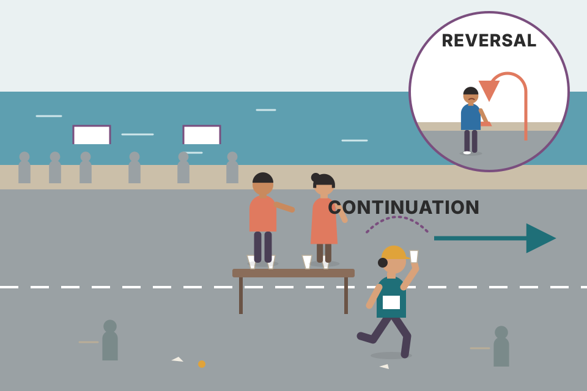
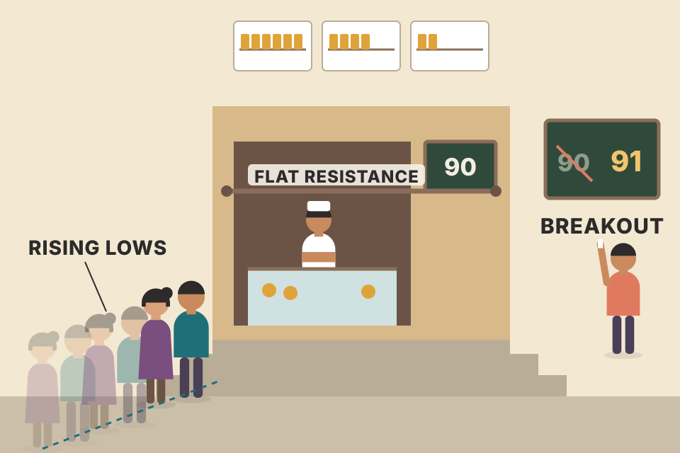
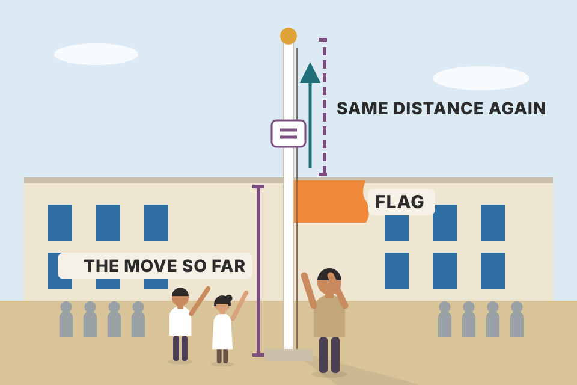
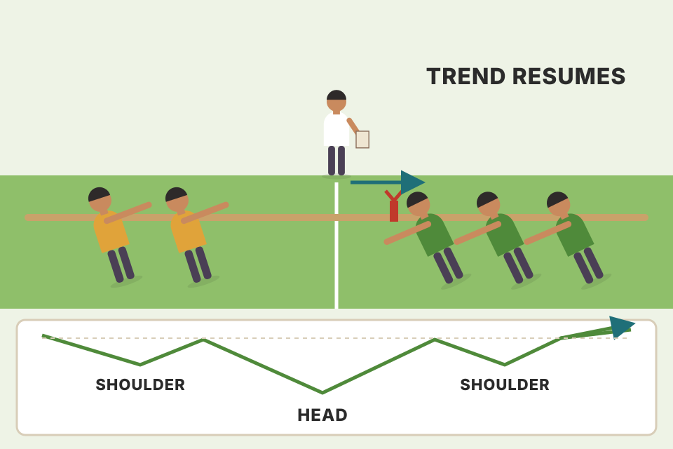

The whole chapter in plain words and in the book's order: symmetrical, ascending and descending triangles (with their time limit and measuring rules), the broadening formation, flags and pennants, wedges, rectangles, the measured move, the continuation head and shoulders, and the ideas of confirmation and divergence. Every chart is a simulated price path built to show one pattern clearly; it isn't real market data. The button re-rolls the small day-to-day noise; the pattern shapes stay the same.
Chapter 5 was about sideways stretches that end a trend. This chapter is about sideways stretches that only interrupt one. Almost every pattern here is two lines drawn around the pause, plus three questions: which way will it break, when, and how far will it go?
Continuation patterns usually say that the sideways action on the chart is just a pause in the prevailing trend, and that the next move will go the same way as the trend that came before. That separates them from Chapter 5's patterns, which usually say a major reversal is under way.
They also differ in time. Reversal patterns usually take much longer to build and mark major trend changes. Continuation patterns are usually shorter and are better described as near-term or intermediate patterns.
Notice how often Murphy hedges with the word usually. Chart patterns are general tendencies, not rigid rules, and there are always exceptions. Even the grouping is sometimes shaky: triangles are usually continuation patterns but sometimes act as reversals; they're usually intermediate but occasionally appear on long-term charts with major significance; the inverted triangle usually marks a major top; and even the head and shoulders is occasionally a consolidation. Allowing for that, patterns do generally fall into the two groups, and read properly they help the chartist work out what the market will probably do most of the time.

A long-distance runner stopping at a water table. The stop is short, they don't turn around, and you'd bet they keep running the same way. A reversal is the runner who sits down, takes their shoes off and walks back.
After a fast move, some early buyers take profits and new buyers wait for a better price, so the market goes sideways while the move is digested. Nothing has changed the reason for the trend, so once the selling is absorbed, prices carry on. The three pauses have different shapes (a flag, a triangle, a rectangle), but each one is exited in the direction the trend was already going. Their durations, days to a few weeks, are also typical of continuation patterns rather than of the long bases and tops in Chapter 5.
Murphy describes the shapes. To trade one, you need four numbers, and every pattern in this chapter gives you all four:
Risk = trigger − stop, reward = target − trigger, R = reward ÷ risk. The pattern's value is only as good as how often the trade reaches its target compared with 1 ÷ (1 + R). Section 06 lets you test that on simulated paths.
There are three types of triangle: symmetrical, ascending and descending. Some chartists count a fourth, the expanding triangle or broadening formation, treated separately later (section 10). Each has a slightly different shape and different forecasting implications.
Two people pushing a door from opposite sides. In the symmetrical triangle both give a little ground each time: it's a fair fight and the door will swing whichever way the bigger trend pushes. In the ascending triangle the sellers stand firm at one spot (the flat top), but the buyers keep stepping closer (rising lows): sooner or later the buyers burst through. The descending triangle is the opposite.
Each line is a record of one side's behaviour. The upper line joins the prices where sellers overwhelmed buyers; the lower line joins the prices where buyers overwhelmed sellers. A flat line means one side keeps showing up at exactly the same price (often one large order, or many orders parked at a round number). A sloping line means that side is changing its mind each swing: a rising lower line is buyers paying more each dip, a falling upper line is sellers accepting less each rally. So the two slopes tell you who is moving and who is standing still, and that's all the triangle's forecast is.
Drag the two slopes (points per day). Lines that converge give triangles, pennants and wedges; lines that stay parallel give rectangles and flags; lines that diverge give the broadening formation. Which one you get depends on the sign of each slope. The classifier and its cut-off (a slope between −0.05 and +0.05 counts as flat) are mine, not Murphy's; the reading attached to each name is his. Two things the slopes can't tell you: duration (a 2-week pennant and a 2-month triangle have the same shape, see section 09) and what came before (flags need a sharp pole).
The symmetrical triangle (the coil) is usually a continuation pattern: a pause, after which the original trend resumes. In Murphy's Figure 6.1a the prior trend was up, so the odds favour an upside resolution. Had the trend been down, the triangle would be bearish.
The minimum requirement is four reversal points. It takes two points to draw a trendline, so each of the two converging lines needs at least two touches. The triangle begins at point 1, where the consolidation starts. Prices pull back to 2, then rally to 3, which is lower than 1. Only once prices fall away from 3 can the upper line be drawn. Point 4 is higher than 2, and only when prices rally from 4 can the rising lower line be drawn. That's when the analyst begins to suspect a symmetrical triangle: four reversal points and two converging lines.
Many triangles have six reversal points: three peaks and three troughs, making five waves inside the triangle before the uptrend resumes. (Murphy returns to this five-wave tendency in the Elliott Wave chapter.) As the Figure 6.1a caption puts it, a close outside either trendline completes the pattern.
Joining dots in a children's puzzle book, except the dots appear one at a time and you're not told the picture. After two dots you can only guess at a line; after four you can see a funnel taking shape; after six you're fairly sure. A triangle is something you discover as the swings happen, never something you can see on day one. Press Next point and notice how long you spend guessing.
Each swing is smaller than the last: buyers are willing to pay a little less on each rally and sellers to accept a little more on each dip. The range is being squeezed from both sides, so neither side is winning. That's why the symmetrical triangle on its own is neutral, and why you lean on the trend that came before it to guess the exit.
Notice the lag built into the rules. The lower line can only be drawn once prices rally away from point 4 (step 5, day 43 here), more than halfway through the pattern. Until then a chartist has a guess, not a triangle. In practice (my addition, not Murphy's): the reversal points also tell you where you're wrong. A trader who buys the upside break would put the stop under the last trough (point 6), because a fall back below it would mean the lower line has failed too.
A triangle has a built-in deadline: the apex, where the two lines meet. As a general rule, prices should break out in the direction of the prior trend somewhere between two-thirds and three-quarters of the triangle's horizontal width, measured from the vertical base on the left to the apex on the right. Because the lines must meet somewhere, that width can be measured as soon as both lines are drawn. An upside breakout is signalled by a penetration of the upper line. If prices stay inside beyond the three-quarters point, the triangle starts to lose its potency, and prices usually just drift out to the apex and beyond.
So the triangle combines price and time. The lines give the price boundaries and tell you when the pattern is complete (a break of the upper line, in an uptrend). They also give a time target: if the triangle is 20 weeks wide, the breakout should come between about the 13th and 15th week. Murphy's Dell example (Fig 6.1d, a bullish symmetrical triangle in the fourth quarter of 1997) was 18 weeks wide and broke out in the 13th week, just past the two-thirds point (⅔ × 18 = 12).
The actual signal is a closing penetration of a trendline (an intraday poke isn't enough; other penetration filters from earlier chapters can be added). Sometimes a return move comes back to the broken line: in an uptrend the broken upper line becomes support; in a downtrend the broken lower line becomes resistance. The apex itself also acts as important support or resistance after the breakout.
A funnel. Early on there's plenty of room and the ball bounces about. Two-thirds of the way down the walls are close enough that the ball has to come out one side. If it somehow rolls all the way to the narrow tip, it just dribbles out with no force; the pattern has lost its spring.
The window is pure geometry: ⅔ × 20 = 13.3 and ¾ × 20 = 15, hence the 13th to 15th week. At default settings the breakout falls inside the green window. Drag the breakout past ¾: it becomes a late, weak exit near the apex, where the lines are so close together that almost any wiggle crosses one of them. The upside move after a late break is drawn smaller to illustrate the loss of potency Murphy describes; the size of that move is my illustration, not a book number.
Why would a late break be weaker? The readout's gap figure gives one mechanical reason (my explanation, not the book's). The two lines close in at a steady rate, so the gap between them is base × (1 − t ÷ width). A break means prices escaped a band that narrow. Escaping a 10-point band says something; escaping a 1-point band says almost nothing, because one ordinary day's range is enough.
Murphy's signal is a closing penetration, and he lets you add the penetration filters of Chapter 4 (a close a set percentage beyond the line, commonly 3% for major lines, or two closes in a row beyond it). Each filter is a trade-off: it ignores more of the false pokes, but when it does fire you get in later and at a worse price. The lab measures both sides on the same simulated paths.
1,000 simulated paths start at 96 under a resistance line at 100 (think of an ascending triangle's flat top). Each day the close moves a random amount (typical size 1 point) and the day's high pokes a little above the higher of the two closes. Each filter waits up to 60 days for its trigger and buys at that day's close (the poke buys at 100, the line itself). A whipsaw is a trigger followed by a close back under 100 within 10 days. With follow-through 0 the paths have no memory: there is no edge to find, so this measures only what each filter costs and saves. All runs are simulated; the numbers say nothing about real markets.
Volume should diminish as the price swings narrow inside the triangle. That contraction is true of all consolidation patterns. Volume should then pick up noticeably on the trendline break that completes the pattern. The return move should come on light volume, with heavier activity again as the trend resumes.
Two more points. As with reversal patterns, volume is more important on the upside: an increase is essential when an uptrend resumes from any consolidation pattern. And although activity dwindles during the pattern, a close look usually shows whether the heavier volume comes on the up-moves or the down-moves. In an uptrend there should be a slight tendency for volume to be heavier on the bounces and lighter on the dips.
Green volume bars are days that closed up, red ones closed down. Across the pattern the bars shrink (fewer people care while the market is undecided), but the green bars inside the triangle are on average a bit taller than the red ones: buyers are still slightly keener. That small lean is the clue to the likely exit before it happens.
Volume is the number of shares that changed hands, so it measures how many people were willing to trade at those prices. Inside the triangle the range narrows and neither side sees a bargain, so fewer people bother. On the break, a new price is on offer and two groups act at once: traders waiting for the breakout, and holders on the wrong side who now have to get out. A break on light volume means few people accepted the new price, so it's easy for prices to slip back inside.
An auction room where the bids have stalled. People stop raising their paddles and the room goes quiet (shrinking volume). Then someone jumps the price, and suddenly half the room is bidding again (the volume burst). If the jump draws no other bids, the auctioneer is soon back at the old price.
Murphy gives no number for a noticeable pick-up; any threshold (1.5×, 2×) is your own choice. The same three ratios are what the readout computes from the chart. Tick the failure case: the inside of the triangle is identical (same lean, same drying up), only the break differs, and the light-volume break falls back inside and then out the bottom. That is the volume rule's practical job: it doesn't tell you a break will fail, it tells you which breaks deserve less trust.
intraday_swing_playbook.md.The simplest technique, and the one Murphy prefers: measure the height of the vertical line at the widest part of the triangle (the base, AB), and project that distance from the breakout point (C). The second: from the top of the base (A), draw a line parallel to the lower trendline. That upper channel line becomes the upside target in an uptrend. It also gives a rough time target for when prices will meet it; sometimes prices hit the channel line at about the same time the two converging lines meet at the apex.
The base method gives one fixed number. The parallel line slopes upward with the triangle's lower line, so its target rises the longer you wait. On this simulated path the time target is where the parallel line sits as the apex arrives. The two methods agree only roughly, which is why both are approximations of a minimum, just as in Chapter 5.
Why should the height mean anything? The base is the widest swing the market made while it was undecided, so it's a measure of how far this market normally travels in one burst. The method assumes the escape move will be at least as big as the biggest swing inside. Notice that the target is fixed but the breakout point slides down the falling upper line: a later breakout (drag the slider) starts lower, so it gives a lower target.
A spring squeezed between two hands. The base is how far apart the hands were at the start; when the spring gets loose, you expect it to jump at least that far. The parallel line is a second guess: it assumes the market keeps climbing at the same rate as the rising lows did.
Tick false breakout above to see the failure case: prices close above the line, slip back in, close under the lower line and hit the stop for a loss of 1R. The trade plan doesn't stop that from happening; it caps the cost.
Each run starts at the entry price and moves like a coin-flip random walk (typical daily move 1 point) plus the drift you set, for up to 60 days. A path that touches the stop is a loss of 1R; one that touches the target wins R; the rest are closed at day 60. The stop is assumed to fill exactly at its price (no gaps). The 2,000 runs reuse the same random numbers when you change a setting, so differences come from the setting, not luck. All of it is simulated and says nothing about real markets.
backtest_results_summary.md); note that it bought 20-day highs on heavy volume (the full report, projects/trading-equation-backtests/reports/REPORT.md), not the chart patterns in this chapter.breakeven_move_fyers.md. The cost is the same in rupees whatever the stop, so in R it grows as the risk shrinks: a stop a quarter as far away makes the cost four times bigger in R.The ascending and descending triangles are variations of the symmetrical one, but they forecast differently. In the ascending triangle the upper line is flat and the lower line rises. That shows buyers are more aggressive than sellers. It's a bullish pattern and is usually resolved by an upside breakout.
The key difference from the symmetrical triangle: no matter where they appear in the trend, ascending and descending triangles have very definite forecasts, the ascending bullish and the descending bearish. The symmetrical triangle is inherently neutral. It still has forecasting value, but only because it's a continuation pattern: you look at the previous trend and assume it will continue.
The bullish breakout is a decisive close above the flat upper line. As with every valid upside breakout, volume should rise noticeably. A return move back to the flat line, which has now turned into support, is not unusual and should come on light volume. Measuring is simple: take the height of the pattern at its widest point and project it up from the breakout point; one more example of using a pattern's volatility for a minimum objective. Murphy's Dow Transports example (Fig 6.3b), formed near the end of 1997, had its flat upper line at 3,400 and a rising lower line; his caption adds that the pattern is normally bullish wherever it appears on the chart.
As a bottom: the ascending triangle appears most often in uptrends as a continuation, but it sometimes forms near the end of a downtrend as a bottoming pattern. Even then it's read as bullish: the break of the upper line completes the base. Ascending and descending triangles are also called right-angle triangles.
A large seller (or many sellers) is supplying shares at one price, so every rally stops at the same line. Buyers, though, are willing to pay more on each dip: the lows rise. Each test eats into the seller's supply. When it's used up, nothing is left at that price and the market jumps through. That logic doesn't depend on the earlier trend, which is why the ascending triangle is bullish even at the end of a downtrend.
The return move has a mechanism too. After the break, the people who sold at 90 and watched prices run away from them often want back in at 90; so do buyers who missed the break. Their orders sit at the old ceiling, which is why it tends to hold as a floor. If it doesn't hold and prices close back under 90 on heavy volume, I'd treat the breakout as failed (my reading; this chapter doesn't spell out a failure rule).
That last line is a practical lesson: a strong breakout day, the kind the volume rule wants, also moves your entry away from the line and eats into R. Buying the return move to 90 instead (if it comes) restores the better numbers, at the risk of never getting filled.
Murphy's own example (Fig 6.3b, Dow Transports) gives the flat line, 3,400, but no height, so its target can't be worked out from the text. The pattern is the same: measure the widest point, add it to 3,400.

A queue of buyers outside a shop whose owner sells at exactly ₹90 and won't budge. Every morning the queue forms a little earlier and a little closer to the door (the rising lows). The owner's stock runs down a bit each day. The day it runs out, the next buyer has to pay ₹91, and the one after ₹92: that's the breakout. And the people who didn't get served at ₹90 are the ones who come back and buy on the dip to ₹90 (the return move).
The descending triangle is a mirror image of the ascending one and is generally bearish: a falling upper line and a flat lower line. Sellers are more aggressive than buyers, and it usually resolves to the downside. The signal is a decisive close under the lower line, usually on increased volume. A return move sometimes follows, and should meet resistance at the broken lower line. Measuring is exactly the same: the height of the pattern at the base on the left, projected down from the breakdown point. (Murphy's Du Pont example, Fig 6.4b, broke its flat lower line in early October 1997.)
As a top: it's a continuation pattern usually found in downtrends, but occasionally it forms at a market top. It isn't hard to recognise there, and a close below the flat lower line then signals a major reversal to the downside.
Flip the ascending triangle's story. A buyer (or a crowd of buyers) is defending one price, 80 here, so every dip stops there. Sellers, meanwhile, accept less on each rally: the highs fall. Each test of 80 uses up some of that buyer's demand. Once it's gone there's nobody left at 80, and prices drop through. The volume lean (section 09) shows it: heavier on the way down, lighter on bounces.
A goalkeeper who never leaves the goal line (the flat floor at 80). The attackers don't retreat as far after each attack (the lower highs), so every new attack starts closer to goal. The keeper saves the first few; sooner or later one goes in.
In the Indian cash market a retail short sale has to be squared off the same day, so a breakdown on a daily chart can't be held short overnight in cash. In practice a bearish daily pattern means one of three things: sell (or don't buy) a stock you hold, use stock futures or options, or use it as a filter for long trades. The measuring rule is the same either way: height 94 − 80 = 14, target 80 − 14 = 66.
The failure mode (my reading) is the mirror of section 07's: a close back above 80 on heavy volume after the break means the buyer at 80 wasn't finished. The stop above the last lower high gives the pattern room for a return move up to the old floor (which should now act as resistance) without being knocked out by it.
In both right-angle triangles volume shrinks as the pattern works itself out and then rises on the breakout. As with the symmetrical triangle, small shifts in volume line up with the swings: in the ascending triangle volume tends to be slightly heavier on bounces and lighter on dips; in the descending triangle it should be heavier on the way down and lighter on bounces.
Time: the triangle is an intermediate pattern. It usually takes longer than a month to form but generally less than three months. A triangle-shaped pause that lasts less than a month is probably a different pattern, such as a pennant (section 11). Triangles sometimes appear on long-term charts, but their basic meaning is always the same.
The ruler converts Murphy's durations to trading days at about 5 per week and 21 per month (my conversion, beyond the book). Pennants and flags: 1–3 weeks (≈5–15 days; in downtrends often 1–2 weeks). Triangles, wedges and rectangles: 1–3 months (≈21–63 days). Duration is one of the cheapest ways to name a pattern correctly.
Why does duration change the name? A pause of a few days after a sharp run is the market catching its breath; a pause of two months means a real disagreement had to be worked out. The bigger pattern has absorbed more trading, so (Chapter 5's rule) it tends to lead to a bigger move.
A stop at a traffic light and a stop for lunch on a long drive. Both are pauses and you carry on the same way afterwards, but you'd never confuse them: the clock tells you which one it was.
An unusual and fairly rare variation: an inverted triangle, a triangle turned backwards. Every triangle so far had converging lines; in the broadening formation they diverge, so the picture looks like an expanding triangle. It's also called a megaphone top.
The volume is different too. In the other triangles volume shrinks as the swings narrow; here volume tends to expand along with the wider price swings. It reflects a market that is out of control and unusually emotional. Because it also reflects an unusual amount of public participation, it most often occurs at major market tops, so the expanding pattern is usually bearish and generally appears near the end of a major bull market. Murphy's Figure 6.5: three successively higher peaks (1, 3, 5) and two declining troughs (2, 4); the violation of the second trough completes the pattern. (The sketch carries on past that break: a drop to 6, a bounce to 7 and a slide to 8.) It's unusually hard to trade, and fortunately rare.
An argument in a crowd that gets louder each round: every shout is bigger than the last, more people join in, and nobody is in charge. It usually ends badly.
In a triangle, each side gets more cautious every swing. Here each side gets more reckless: every rally runs past the last high, and every drop runs past the last low. Breaking an old high triggers late buyers and short-covering; breaking an old low triggers stop-loss selling. Each wave pulls in more people (Murphy's public participation), so volume grows with the swings. A market making higher highs and lower lows has no agreed value, which is why it tends to show up at the end of a long bull market, when the crowd is most excited.
It's hard to trade because every ordinary breakout signal fails inside it. Step through the chart (Next signal) to take each one; on this simulated sketch (my numbers, measured from the swing points; the chart's readout uses the actual closes, so it differs a little):
Only the break of the second trough, after the third higher peak, carries Murphy's meaning: the pattern is complete and the top is in.
Flags and pennants are quite common. They're treated together because they look alike, show up at about the same place in a trend, and share the same volume and measuring rules. Both are brief pauses in a dynamic move. One requirement for both is that they're preceded by a sharp, almost straight-line move: an advance or decline that has got ahead of itself, so the market takes a short rest before running off again in the same direction. They are among the most reliable continuation patterns and only rarely produce a reversal.
The pole is a burst of urgent buying (or selling). The flag is the market resting: a few holders take quick profits, but there's no real selling pressure, which is why volume collapses. A flag that slopes with the trend would mean buyers are still chasing, so it isn't a rest at all. Switch to the downtrend: the flag now tilts up against the fall, and it's drawn shorter (Murphy: patterns in downtrends take less time).
Tick the rare failure: the flag breaks the wrong way. Murphy says flags and pennants only rarely produce a reversal, but rarely isn't never. Everyone who bought the pole is now trapped above the market, and their selling speeds the fall. The flag's own low is the natural place for a stop (my addition), and it's close, which is why flags are popular with traders: the risk is small next to the pole-sized target (section 12).
A sprinter who stops for a few seconds, hands on knees, then sets off again the same way. A flag is the breather. If the sprinter sits down instead, that isn't a breather any more (the failure case).
Each of Murphy's requirements becomes one test. The numbers (a pole at least 4 average daily ranges tall, measured over the 8 bars before its top, a flag no deeper than half the pole, flag volume under 60% of the pole's) are my thresholds; he gives none. The sloping upper line is drawn by fitting the slope of the flag's highs and shifting it up until it touches the highest one, and the trigger is a close above it. The second readout above runs this exact function on the chart (the downtrend is handled by flipping the price upside down) and draws its stop and target, then reports how the trade ended. In the failure case it usually stays out, because the pattern never breaks the way the trend points; on some re-rolls of the downtrend failure it fires on a brief poke first and is stopped out the next day. That is the false breakout the stop exists for, and it costs 1R, not the whole move.
Two honest caveats. First, a detector like this finds the shape; it says nothing about whether the shape has an edge, which needs real data and the pooled reasoning of section 06. Second, the pole here is measured from 8 bars back, a stand-in for Murphy's original breakout point; on a real chart you'd anchor it on the level or trendline that actually broke.
Flags and pennants are said to "fly at half-mast" from a flagpole, the sharp advance or decline before them. Half-mast means these minor patterns tend to appear about halfway through the move. In general, the move after the trend resumes duplicates the flagpole, the move just before the pattern.
More precisely: measure the preceding move from the original breakout point, where the original trend signal was given (a break of a support or resistance level or of an important trendline). Then project that vertical distance from the flag's or pennant's breakout point (where the upper line breaks in an uptrend, or the lower line in a downtrend).
| Murphy's summary, regrouped | Flag | Pennant |
|---|---|---|
| Before it | an almost straight-line move (the flagpole) on heavy volume | |
| During it | a pause of about 1–3 weeks on very light volume; shorter in downtrends | |
| Shape | small parallelogram sloping against the trend | small, horizontal symmetrical triangle |
| After it | the trend resumes on a burst of trading activity | |
| Where | about the midpoint of the move | |
| How common | very common in the financial markets | |
The target is the pole length added to the flag's breakout price, so the flag sits roughly in the middle of the whole move. That symmetry is the same assumption as the measured move (section 16): the second leg of a move tends to resemble the first.
Why measure from the original breakout and not from wherever the pole seems to start? Because the breakout is where the urgent move began: the point where a level broke and buyers rushed in. Measuring from there captures the full burst, not a random low picked after the fact. Then the flag breakout is a second, similar burst by the same kind of buyers.

A flag on a pole, hoisted halfway up. The pole below the flag is the move you've already seen; the empty stretch of pole above it is about the same length again.
That small risk next to a pole-sized target is the flag's attraction. The pooled test in section 06 (choose bull flag) shows why a good R alone still isn't an edge.
A wedge is like a symmetrical triangle in both shape and duration: two converging trendlines meeting at an apex, usually lasting more than one month but not more than three (intermediate). What sets it apart is a noticeable slant, up or down. As a rule, like the flag, the wedge slants against the prevailing trend. So a falling wedge is bullish and a rising wedge is bearish. In Figure 6.8a the bullish wedge slants down between two converging lines; in the downtrend of Figure 6.8b the lines slant unmistakably up.
As tops and bottoms: wedges most often appear within a trend as continuation patterns. They can appear at tops or bottoms and signal a reversal, but that's much less common. Near the end of an uptrend you may see a clear-cut rising wedge. A continuation wedge in an uptrend should slope down against the trend, so a rising one is a clue that this is bearish, not bullish. At bottoms, a falling wedge can tip off the end of a bear trend. Wherever it appears, follow the maxim: a rising wedge is bearish and a falling wedge is bullish. (Murphy's example: a bearish rising wedge in the CRB index, Fig 6.8c.)
A falling wedge is a ball bouncing down a narrowing staircase: each step down is smaller and the bounces come quicker, so the fall is running out of energy. A rising wedge is the same thing upside down: each push up gains less ground.
In a rising wedge the lower line climbs faster than the upper line, so new highs gain less and less ground per swing. Buyers are still lifting prices, but with diminishing force. When the lower line finally breaks, the move against the trend is over (in a downtrend) or the uptrend's tiredness is confirmed (at a top). The slope tells you which side is running out of energy.
Compare the readout's two slopes with section 02's classifier: in a falling wedge both lines fall, but the upper one falls faster (−0.35 against −0.15 points a day), so the gap closes. Each new low is only a little lower than the last, while the rallies still reach well up. Sellers are pushing, but each push buys less ground. Note what the chapter does not give for wedges: no measuring rule and no separate volume rule. Any target you put on a wedge is borrowed from elsewhere (for example the height at its widest point, as with triangles), and that would be your own assumption.
The same arithmetic for the rising wedge at a top (third setting): upper 71.5 + 0.25 d, lower 60.1 + 0.45 d, apex at 11.4 ÷ 0.2 = day 57. Both lines rise, but the lower one almost twice as fast, so the room for new highs closes. Murphy says a wedge is like a symmetrical triangle in shape and duration; applying the triangle's ⅔–¾ timing to it is my extension, not his rule. The failure mode to watch: a rising wedge inside an uptrend is easy to mistake for a healthy rising channel, and then it breaks down instead of out.
The rectangle goes by other names, but it's usually easy to spot: a pause in the trend during which prices move sideways between two parallel horizontal lines. It's also called a trading range or congestion area; in Dow Theory it's a line. It usually represents a consolidation and is usually resolved in the direction of the trend before it. As a forecaster it's like a symmetrical triangle with flat instead of converging lines.
A decisive close outside either boundary completes it and shows the direction. But stay alert that a rectangle doesn't turn into a reversal pattern: in the uptrend of Figure 6.9a the three peaks might at first look like a possible triple top (and a bearish rectangle could turn into a triple bottom, Fig 6.9b). Murphy's Compaq example (Fig 6.9c) traded sideways for four months before an early-May break above the upper line resumed the uptrend.
Volume: because the swings in both directions are fairly broad, watch which moves carry the heavier volume. Rallies on heavier and setbacks on lighter volume → probably a continuation of the uptrend. Heavier volume on the declines → a warning that a reversal may be in the works.
Similarities and differences: rectangles usually last one to three months, like triangles and wedges. Their volume differs from other continuation patterns: the broad swings prevent the usual drop-off in activity. The most common measurement uses the height of the range: measure top to bottom and project it from the breakout point (a vertical measure based on volatility; the point and figure count gives a horizontal one). Everything said about breakout volume and return moves applies. Because the boundaries are flat and well defined, support and resistance are especially clear: after an upside breakout, the top of the old range should give solid support on dips; after a downside breakout, the bottom of the range should become a solid ceiling on rallies.
Same price path in both settings; only the volume changes. With heavier volume on rallies, the buyers are the committed side, and the range resolves up: the old ceiling (top line) then holds as a floor on the pullback. Switch the volume: the price ending is drawn breaking down instead, because heavy volume on declines is Murphy's warning sign of a top. The readout compares average volume on up days and down days inside the range.
The second setting is the failure case of the continuation idea, and it's the one Murphy warns about with Figure 6.9a: three equal peaks inside an uptrend can turn out to be a triple top. The flat lines look identical either way; only the volume (and eventually the break) tells them apart. That's why a rectangle is read with both eyes: price for the boundaries, volume for the likely winner.
A ball bouncing between the floor and ceiling of a room. While it's in the room you only learn how high the room is (that height becomes the target). The interesting moment is when it goes through the ceiling or the floor. And because everyone could see the ceiling, once the ball is above it the ceiling turns into a floor people are happy to stand on.
A practical check (mine): a stop for an upside break goes back inside the range, for example under the midpoint of 85 or under the floor at 80. The first is closer but can be hit by a return move to 90 that overshoots; the second survives almost anything but makes the risk equal to the whole target, R ≈ 1. Section 06's pooled test (choose rectangle) shows the same trade-off on simulated paths.
Some chartists trade the swings inside a rectangle: buy dips near the bottom and sell rallies near the top. The short-term trader uses the well-defined boundaries to profit from an otherwise trendless market. Because positions are taken at the extremes, the risk is relatively small and well defined. While the range holds, this counter-trend approach works quite well. When a breakout does occur, the trader not only exits the last losing trade immediately but can reverse into the direction of the new trend. Oscillators are especially useful in sideways markets but less useful once a breakout has happened (Chapter 10).
Other traders assume the rectangle is a continuation pattern and only buy near the bottom of the range in an uptrend, or sell near the top in a downtrend. Others avoid trendless markets altogether and wait for a clear breakout. Most trend-following systems perform very poorly in these sideways periods.
The rules here are my illustration, beyond the book: enter at the boundary ±0.6 points, exit at the opposite boundary, and on a close beyond either line exit and (in the first approach) reverse. Results are in price points on this one simulated path, with no costs. The point is the shape of the trade-off: the swing trader collects several small, well-defined gains and takes one small loss when the range breaks; the waiter takes nothing until the break and then rides the trend.
Be suspicious of that single path, though: it was built to hold the range for six clean swings and then break upward, so range trading wins on it by design. The pooled test below removes that.
Each simulated market starts at 85 between a floor of 80 and a ceiling of 90. For a random 30–70 days it is a range: each day it moves a random amount (typical size 1.2 points) plus a pull back toward 85 of κ × (85 − price). Then the range ends and a trend starts: a drift up (with the chance you set) or down, typical daily move 1 point, until day 110. Entries are within 1.5 points of a boundary; a breakout is a close more than 0.5 beyond a line. The three approaches follow the same logic as the chart above, with a wider entry zone and a small breakout filter so that ordinary noise doesn't trigger everything. Prices are in points (85 ≈ a ₹85 stock, so the default cost of 0.25 is about 0.3%). All simulated; not evidence about any real market.
Murphy's practical point survives the test: inside a range the risk of a swing trade is small and well defined, and the trader must get out at once when the range breaks.
backtest_results_summary.md: the VWAP pullback / reversion versions (a range-trading idea) lost in every version you tested, and intraday_swing_playbook.md (I-4, VWAP mean reversion on range days) says the range-day filter is essential. Range trading works only while the range holds. The pooled test makes the requirement concrete: reversion pays only if prices pull back toward the middle by more than the round-trip cost.The measured move, or swing measurement, describes a major advance or decline that splits into two equal and parallel moves. For it to work, the market moves should be fairly orderly and well defined. It's really a variation of ideas already covered: consolidation patterns like flags and pennants usually occur about halfway through a move, and markets tend to retrace about a third to a half of a prior trend before resuming it.
In a well-defined case, a rally from A to B is followed by a counter-trend swing from B to C that retraces a third to a half of AB. The next leg up (CD) is then assumed to come close to duplicating the first (AB) in size and slope. So the height of AB is simply measured upward from the bottom of the correction at C. Murphy's Procter & Gamble example (Fig 6.10b): AB was 20 points, and adding 20 to the low at C (62) gave a target of 82 at D. One thing the caption doesn't say (my reading of the chart's scale, not Murphy's numbers): A sits near 57½ and B near 78, so that real correction gave back about two-thirds to three-quarters of AB (two-thirds measured to the lowest bars near 64½, more to the drawn C at 62), deeper than the third-to-a-half of the textbook case, yet prices still climbed to about the 82 target by the chart's right edge (February 1998).
Set A = 50, AB = 20 and the retracement to 40%: C lands at 62 and D at 82, the same C and D as Murphy's P&G chart (A = 50 and 40% are my choices for the calculator; the real chart's A was higher and its correction deeper). Push the retracement outside ⅓–½ and the readout flags that the setup is no longer the well-defined case the book describes. The target always sits AB above C, so a deeper correction lowers the target.
Why might the second leg copy the first? Murphy's answer is that it's the halfway-flag and one-third-to-half-retracement ideas combined. A plausible reason underneath (mine): the same buyers, with the same reasons, facing the same kind of market, tend to move it a similar distance; and once enough traders expect it, the target becomes a place where they take profits, which is self-fulfilling. Murphy presents it as a tendency in orderly markets, not a law.
A staircase with one landing. The first flight (AB) tells you how tall a flight is in this building. The landing (BC) is a short step back down. The second flight (CD) is assumed to be the same height as the first.
The deeper the correction, the lower the target, by exactly the extra depth.
Say you buy at C, aim for D and give up if prices fall back to A. If prices had no memory (a random walk), the chance of reaching D first would just be the distance to A divided by the total distance between A and D: (1 − r) ÷ (2 − r), where r is the retracement as a fraction of AB. For r = 40% that's 0.6 ÷ 1.6 = 37.5%; for ⅓ it's 40%; for ½ it's 33%. The readout shows it for your settings. A real measured-move edge has to beat that number on real data, and Murphy gives no hit-rate statistics for the measured move.
Chapter 5 described the head and shoulders as the best-known and most trustworthy reversal pattern. Sometimes it appears as a continuation instead. Prices trace something that looks like a sideways rectangle, except that in an uptrend the middle trough is lower than either shoulder (Fig 6.11a), and in a downtrend the middle peak is higher than the other two (Fig 6.11b). Either way it's a head and shoulders turned upside down relative to what a reversal would look like there, so there's no chance of confusing it with the reversal pattern. Murphy's General Motors example (Fig 6.11c, first half of 1997) was very clear but in an unusual place, and completed with a close above the neckline at 60.
In an uptrend a reversal top would have three peaks; here the market makes three troughs, an inverse head and shoulders, which is a bullish shape. So the shape agrees with the trend instead of fighting it, and the neckline break sends prices on in the trend's direction.
The quick test (my phrasing of Murphy's point): ask whether the head points with the trend or against it. A reversal head sticks out in the trend's direction, a last push that fails. A continuation head sticks out against the trend, a last shakeout before the trend resumes. In practice (my addition) you treat it like any rectangle-type pause: wait for the close through the neckline in the trend's direction (60 in Murphy's GM example), and use the right shoulder as the place where you'd be proved wrong.

A tug-of-war team that's winning slips once, badly, in the middle of the contest (the head), recovers, and then pulls harder. The slip looks dramatic, but it's surrounded by two smaller slips at about the same level, and the team never loses its footing for good.
Compare that R with the flag's 3.7 in section 12: a head and shoulders is wide, so the natural stop is far away and the trade carries a lot of risk for its target. A tighter stop (under the neckline) improves R on paper but sits right where a return move would come. Murphy's GM example gives the neckline (60) but not the head, so its target can't be worked from the text. The readout uses the actual breakout day, so its target moves a little with the re-roll.
Confirmation is one of the themes that runs through all of market analysis. It means comparing all the technical signals and indicators to make sure most of them point the same way and confirm each other. Murphy introduces it here in the context of chart patterns, but it applies to virtually every part of technical analysis, and he says he'll come back to both ideas again and again through the book. Its counterpart is divergence: a situation where different indicators fail to confirm each other. Here it's used in a negative sense, but divergence is valuable: it's one of the best early warnings of an impending trend reversal. Chapter 10 (Oscillators and Contrary Opinion) covers it at length.
Conclusion: this ends the treatment of price patterns. The technician's three raw inputs are price, volume and open interest, and most of what has been said so far has been about price. Chapter 7 looks at volume and open interest and how they fit into the analysis.
Here the second indicator is volume, the one this chapter has used all along. In the confirming case, price makes a new high and the volume on that move is the heaviest in the chart. In the divergent case, price makes the same new high but on fading volume: the two disagree, and that disagreement is the warning. The ending shown for the divergent case is an illustration of the risk, not a certainty.
Why does agreement matter? Each indicator is a different, noisy measurement of the same hidden thing: whether buyers or sellers are in control. Price alone can be pushed to a new high by a few eager buyers in a thin market. Price plus volume plus (later) momentum all agreeing is much harder to fake. When they disagree, one of the measurements is telling you the move has less behind it than the price suggests.
A second opinion from a doctor. One test saying you're fine is reassuring; two independent tests saying so is much more convincing. If the second test disagrees, you don't panic, but you stop assuming all is well.
The checklist itself is mine; Murphy's point is the principle behind it: the more independent signals agree, the more the move can be trusted, and a disagreement is an early warning rather than a sell signal by itself. Flip the chart's setting to see the second case play out on simulated prices.
intraday_swing_playbook.md: the S-1 breakout needs volume above 1.5 × the 20-day average and the ORB needs relative volume above 2. Both are volume confirming a price breakout.Direction (a continuation is a pause, the prior trend resumes) and time (continuation patterns are usually shorter, near-term or intermediate) (section 01).
Four: each of the two converging lines needs at least two touches. Many triangles have six, making five waves (section 03).
Between about the 13th and 15th week (⅔ to ¾ of the width). Beyond ¾ it loses potency and tends to drift to the apex and beyond (section 04).
On the bounces; lighter on the dips. Overall volume shrinks inside, then rises on the breakout (section 05).
Base height projected from the breakout point (preferred), or a line from the top of the base parallel to the lower trendline (section 06).
Still bullish. Ascending and descending triangles keep their meaning wherever they appear; this one would be a bottom (section 07).
A pennant. Triangles usually take more than a month (section 09).
It expands with the widening swings; it usually appears at major tops, near the end of a bull market, and is bearish (section 10).
110 + 12 = 122. Measure the pole from the original breakout point and project it from the flag's breakout (section 12).
Bearish. A continuation wedge in an uptrend should slope down; a rising wedge is bearish, a falling wedge bullish (section 13).
A warning of a possible trend reversal; heavier volume on rallies would point to continuation (section 14).
82. BC should retrace roughly a third to a half of AB (section 16).
Risk 6.4, reward 16.5, R ≈ 2.6, break-even win rate 1 ÷ 3.6 ≈ 28%. A random walk hits the target first about risk ÷ (risk + reward) = 6.4 ÷ 22.9 ≈ 28% of the time: exactly break-even. A good R:R isn't an edge; the edge has to come from real follow-through after the break (section 06, my addition).
Return moves. Murphy says a pullback to the broken line, which should now act as support, is not unusual. A stop placed just under that line is in the path of the return move; a stop beyond the last reversal point survives it at the price of a larger risk (sections 04, 07 and the section 06 test).
The range trader is paid by the pull back toward the middle (κ); the waiter by the trend after the break. With both at zero every approach loses roughly its costs: a rule only makes money if the market really behaves the way the rule assumes (my simulation, not Murphy's).